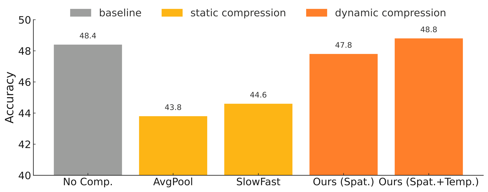
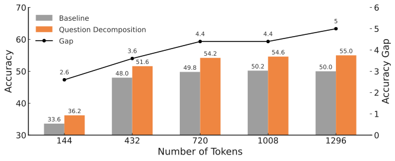

Abstract
Video large language models (Vid-LLMs), which excel in diverse video-language tasks, can be effectively constructed by adapting image-pretrained vision-language models (VLMs). However, this adaptation remains challenging, as it requires processing dense and temporally extended visual inputs that exceed the capacity of image-based models. This paper identifies the perception bottleneck and token overload as key challenges in extending image-based VLMs to the video domain. To address these issues, we propose D-CoDe, a training-free adaptation framework that incorporates dynamic compression and question decomposition. Specifically, dynamic compression alleviates the perception bottleneck through adaptive selection of representative frames and content-aware aggregation of spatial tokens, thereby reducing redundancy while preserving informative content. In parallel, question decomposition mitigates token overload by reformulating the original query into sub-questions, guiding the model to focus on distinct aspects of the video and enabling more comprehensive understanding. Experiments demonstrate that D-CoDe effectively improves video understanding across various benchmarks. Furthermore, strong performance on the challenging long-video benchmark highlights the potential of D-CoDe in handling complex video-language tasks.
Motivation: Challenges in Image-to-Video Adaptation
Adapting image-pretrained VLMs to video requires effective token compression and comprehensive understanding of the resulting representations. However, the perception bottleneck hinders efficient compression with minimal information loss, while token overload limits comprehensive interpretation of the compressed tokens, as their number still exceeds the capacity of image-pretrained VLMs.

Two Key Challenges
We identify two key challenges in extending image-based VLMs to the video domain: Perception Bottleneck — static compression (uniform sampling, average pooling) treats all content uniformly, discarding informative cues that are dynamically distributed across temporal and spatial dimensions; Token Overload — even after compression, the number of visual tokens still far exceeds image-model capacity, causing performance saturation as the model cannot effectively interpret the excess information.
Perception Bottleneck
Static compression strategies such as uniform frame sampling and spatial average pooling lack semantic adaptivity and tend to discard informative cues that are unevenly distributed across temporal and spatial dimensions. As shown below, static methods lead to notable performance degradation, while our dynamic compression alleviates this drop and even surpasses the uncompressed baseline.

Token Overload
Even after compression, video inputs contain substantially more visual tokens than static images, exceeding the capacity of image-pretrained VLMs. The vanilla model exhibits a performance plateau as the token count increases. In contrast, question decomposition consistently outperforms the baseline with a widening accuracy gap, demonstrating superior scalability.

Method
To tackle these challenges, we introduce D-CoDe, a training-free framework that scales image-pretrained VLMs to video by integrating dynamic compression and question decomposition. Dynamic compression augments uniform sampling with supplementary frames and filters uninformative spatial tokens, while question decomposition reformulates complex queries into focused sub-questions for comprehensive understanding.

Overview of the D-CoDe framework. Dynamic compression adaptively selects representative frames and aggregates spatial tokens, while question decomposition reformulates the query into sub-questions for more comprehensive video understanding.
Supplementary Frame Selection
Two-stage temporal compression: uniformly sample ⌊α·N⌋ frames, then iteratively select supplementary frames with maximum semantic diversity using CLIP global features.

Spatial Token Pruning & Merging
Prune low-activation tokens by ℓ2 norm, then greedily merge semantically similar tokens (cosine similarity > τ) to reduce spatial redundancy while preserving informative content.

Results
Multiple-Choice VideoQA ↑
| Method | NExT-QA | EgoSchema | IntentQA |
|---|---|---|---|
| IG-VLM | 63.1 | 35.8 | 60.3 |
| SF-LLaVA | 64.2 | 47.2 | 60.1 |
| TS-LLaVA | 66.5 | 50.2 | 61.7 |
| D-CoDe | 68.3 | 58.0 | 64.2 |
Open-Ended VideoQA — Accuracy ↑
| Method | MSVD | MSRVTT | TGIF | ANet |
|---|---|---|---|---|
| IG-VLM | 78.8 | 63.7 | 73.0 | 54.3 |
| SF-LLaVA | 79.1 | 65.8 | 78.7 | 55.5 |
| TS-LLaVA | 79.0 | 65.1 | 77.7 | 56.7 |
| D-CoDe | 80.0 | 64.2 | 79.1 | 56.4 |
Full Comparison — All Methods (7B LLM, CLIP-L Visual Encoder)
| Method | Type | NExT-QA | EgoSchema | IntentQA | MSVD | MSRVTT | TGIF | ANet |
|---|---|---|---|---|---|---|---|---|
| Video-LLaVA | trained | 60.5 | 37.0 | — | 70.7 | 59.2 | 70.0 | 45.3 |
| MovieChat+ | trained | 54.8 | 56.4 | — | 76.5 | 53.9 | — | 48.1 |
| PLLaVA | trained | — | — | — | 76.6 | 62.0 | 77.5 | 56.3 |
| DeepStack-L | free | 61.0 | 38.4 | — | 76.0 | — | — | 49.3 |
| M³ | free | 63.1 | 36.8 | 58.8 | — | — | — | — |
| IG-VLM | free | 63.1 | 35.8 | 60.3 | 78.8 | 63.7 | 73.0 | 54.3 |
| SF-LLaVA | free | 64.2 | 47.2 | 60.1 | 79.1 | 65.8 | 78.7 | 55.5 |
| TS-LLaVA | free | 66.5 | 50.2 | 61.7 | 79.0 | 65.1 | 77.7 | 56.7 |
| D-CoDe (Ours) | free | 68.3 | 58.0 | 64.2 | 80.0 | 64.2 | 79.1 | 56.4 |
Module Ablation (EgoSchema) ↑
| Module | Acc. (%) |
|---|---|
| Baseline | 44.8 |
| + Spatial Compression | 50.6 |
| + Temporal Selection | 51.8 |
| + Question Decomposition | 58.0 |
Efficiency Analysis (EgoSchema)
| Module | Acc. (%) | s/sample |
|---|---|---|
| Baseline | 44.8 | 3.93 |
| + Dynamic Compression | 51.8 | 6.12 |
| + Question Decomposition | 58.0 | 37.40 |
Qualitative Examples
Temporal Compression Visualization
Yellow frames are uniformly sampled; green frames are supplementary selections that maximize semantic diversity, capturing key moments missed by uniform sampling.

Spatial Compression Visualization
Low-activation tokens (background regions) are pruned, and semantically similar remaining tokens are merged into clusters.


Attention Visualization
Question decomposition guides the model to attend to different aspects of the video. Each sub-question shifts the attention distribution to focus on distinct temporal regions.


Code
D-CoDe provides three modular functions that can be used independently or combined:
from Dcode import generate_subquestions, supp_frame_selection, token_select_and_merge, load_clip_model # 1. Question Decomposition (requires OPENAI_API_KEY) subquestions = generate_subquestions( question="What did the person do after picking up the cup?", prompt_variant="original" ) # 2. Frame Selection (based on semantic diversity) clip_processor, clip_model = load_clip_model() selected_frames, frame_idxs = supp_frame_selection( video_frames, N=15, uniform_ratio=0.85, clip_model=clip_model, clip_processor=clip_processor ) # 3. Token Selection and Merge merged_features = token_select_and_merge( image_features, top_k=288, merge_strategy="mean", similarity_threshold=0.8 )
See the GitHub repository for full installation instructions, data preparation, and evaluation scripts.
BibTeX
If you find this work useful, please cite our paper:
EMNLP version:
@inproceedings{huang-etal-2025-code,
title = "{D}-{C}o{D}e: Scaling Image-Pretrained {VLM}s to Video via Dynamic Compression and Question Decomposition",
author = "Huang, Yiyang and
Wang, Yizhou and
Fu, Yun",
booktitle = "Proceedings of the 2025 Conference on Empirical Methods in Natural Language Processing",
year = "2025",
pages = "11798--11811",
}
arXiv version:
@article{huang2025d,
title={D-CoDe: Scaling Image-Pretrained VLMs to Video via Dynamic Compression and Question Decomposition},
author={Huang, Yiyang and Wang, Yizhou and Fu, Yun},
journal={arXiv preprint arXiv:2510.08818},
year={2025}
}